Some Stories
There's no better way to start out a page about nature other than some good ol' stories. So, pretend that you're around a campfire, grab a snack, and learn about my misadventures in the wilderness.
Lost in the Woods
This is probably a story that almost everybody can relate to, so I'll keep it short and sweet. A few years ago, being the pea-brained preteen I was, I went to the forest by myself to look for salamanders. 3 hours and 20 salamanders later, it was time to head back . . . and I was completely lost. The next hour was filled with google maps tweaking out, sending voice messages to my friends like a captain lost at sea, and seeing the same tree 4 different times. Luckily, after the 10th loop up the hill, I found a paved pathway which I followed all the way out of the forest and got home by nightfall.
A Muddy Hell
This story takes place from my first time going dipnetting in a new part of the river. If you don't know what dipnetting is, it's where you wade around in the water with a net to catch fish. In the part of the river where I usually dipnetted, it was pretty rocky, and that's what I expected with this part of the river. I was very wrong. 20 minutes in and I was over ankle-deep in river mud, contemplating what choices I made to get here. Using the sheer power of the indomitable human spirit, I freed myself and didn't even lose my sandals.
My Hand and the Water Serpent
You see, in my city there are 5 species of snake: The Eastern Garter Snake, The Dekay's Brownsnake, The Eastern Milksnake, The Red-bellied Snake, and lastly, the subject of this story: The Common Water Snake. I was a pretty dumb pre-teen as you could probably imagine and I tended to pick up most snakes I found: most of those snakes being Eastern Garter Snakes. So, when I went to the river and saw a snake swimming down the river, I immediately grabbed it and just as quickly had judgement delivered. Completely unrelated, I learned that Common Water Snakes have an anti-coagulant in their saliva, which prevents the blood from clotting and causes you to bleed for longer.
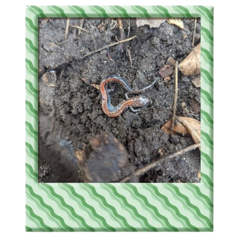 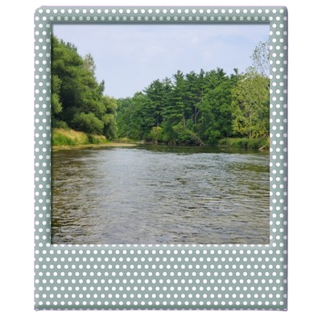 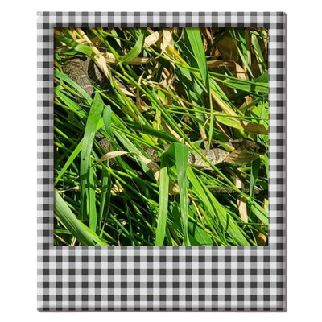INaturalist
INaturalist is a platform I found 1-2 years back and ever since then, I've been absolutely hooked. INaturalist in a nutshell is like irl pokemon, you take pictures of animals, plants, fungi, etc and then it's stored for you so that you can see how many species and how many individuals you've observed. Now, obviously, it's a great tool for collecting data about various species but the main reason I use it is because of the leaderboard. For each species there's a leaderboard to see who has observed it the most, there's a global leaderboard and there's also leaderboards for cities, countries, etc. With all this said, all the animals on the right are the ones I'm ranked number one for in my city.
Finding a very Special Turtle
If you look to the right, you'll see one species stands out from the others, that being the only turtle on there, The Blanding's Turtle. The reason why it gets a whole section dedicated to it is because . . . drumroll please . . . in the entirity of my city, I am the ONLY one to have an observaton of the Blanding's Turtle. So ya, I think that's pretty neat.
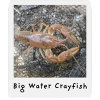 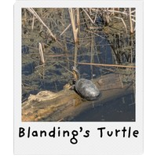 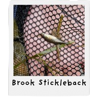 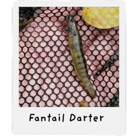 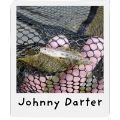 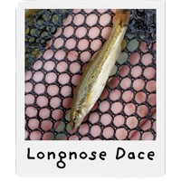 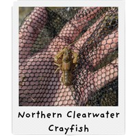 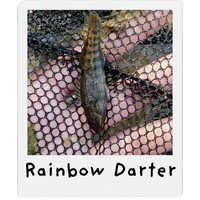 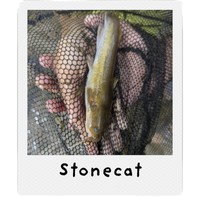 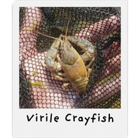 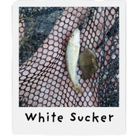
My Nature Journal
Earlier this summer, I, as many others do, had checked out a ton of books from the libraries. One of these books was "The Naturalist at Home" by Brenner Kelly. This book covered a variety of projects you could do to further explore the natural world and the very first activity was: Making a Nature Journal. So, after dusting off a random old journal in my shelf, I began to document all my outings in this little green journal. Now, the journal is here for all of you to see.
My Trip to Costa Rica
Nearly 2 years ago, I visted Costa Rica along with my family and to say it was amazing is a gross understatement. It was so biodiverse that everywhere I looked there was a new species. In fact, Costa Rica was so biodiverse that in 2 weeks, I went from 100 species to OVER 300 SPECIES. So, making a section of the Nature section dedicated to Costa Rica was a no brainer.
Tortuguero: The Boat Ride and the Night Walk
Tortegero is a small village that borders right on the Tortuguero national park. We had to take a boat ride to get there due to how remote it was and on the way there, I spotted a species I was really hoping to spot: The American Crocodile. After a very strong start to this trip, we went to the hotel, rested, and then left by nightfall for the nightwalk. The trail was completely flooded, so we had to wear boots as the guide showed us the hundreds of different species of frogs, insects, and spiders. At one point, we even saw a turtle swimming about in the flooded trail. It's impossible to describe how amazing it was seeing new species, after new species, after new species. The species I have below are, from left to right, Black River Turtle, Helmeted Iguana(which is related to chameleaons), Brazillian Wandering Spider, and the American Crocodile.
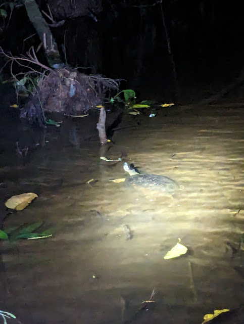 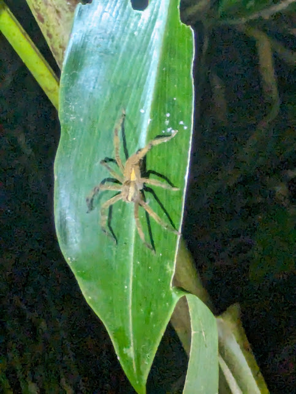 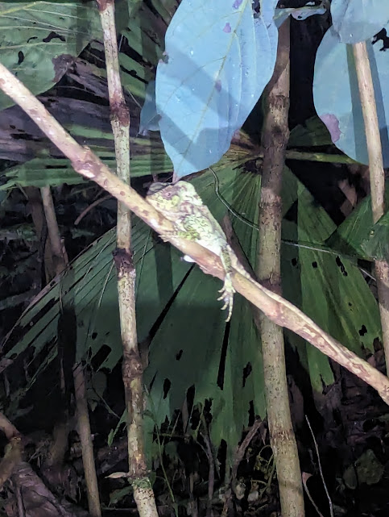
Tortuguero: The Canoe Ride and The Day Walk
The next morning, we were out on the lagoon in a canoe. It was so calm, there was absolutely no other noise other than the water and the occasional bird. Speaking of birds, the diversity of birds on this lagoon and it's creek was extrodinary. We saw many different species of herons and other fish eating birds. Other than birds, we also saw some Spectacled Caimans. After the canoe ride, we took a trail into the forest for a day walk. Which, while not as diverse as the nightwalk, still allowed us to spot many interesting species, such as land crabs, lizards, poison dart frogs, and monkeys. The species listed below are: Northern Jacana, Little Blue Heron, Spectacled Caiman, and The Strawberry Poison Dart Frog.
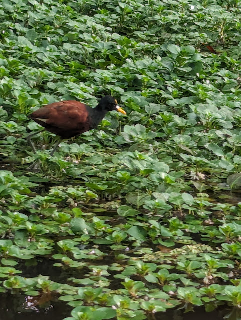 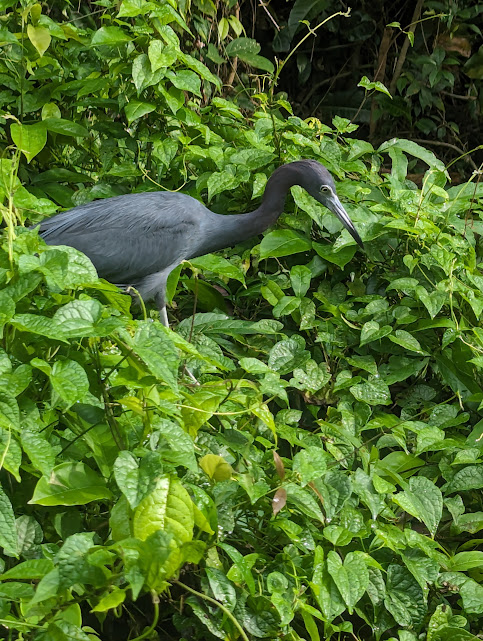 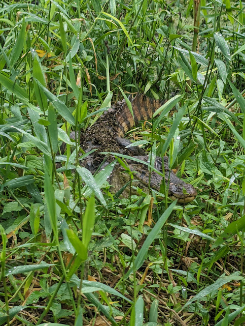 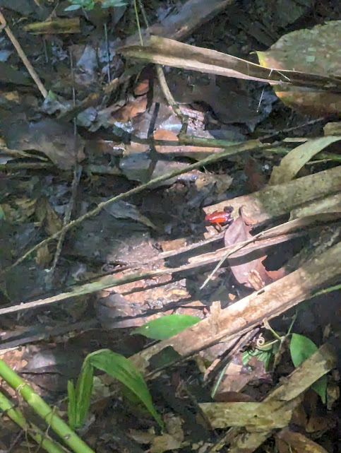La Fortuna and Tamerindo
The next two places we went to in Costa Rica was La Fortuna and then Tamerindo. We didn't see many animals in La Fortuna, there most of the species I photographed were birds I saw at the resort we stayed at. The main attraction of La Fortuna was the amazing views on the hikes. After that, we were off the sandy shores of Tamerindo. There, we stayed at a resort where we saw some very chill iguanas. Then we went to do some snorkling, where I spotted a big pufferfish just chilling out in the open. Another amazing thing about Tamerindo was how clearly you could see the stars at night on the beach.
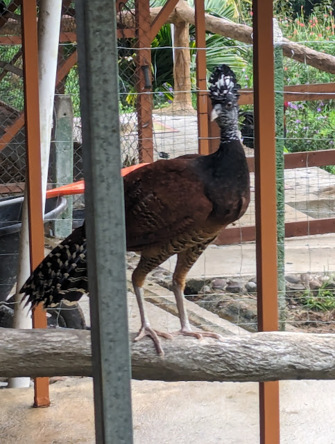 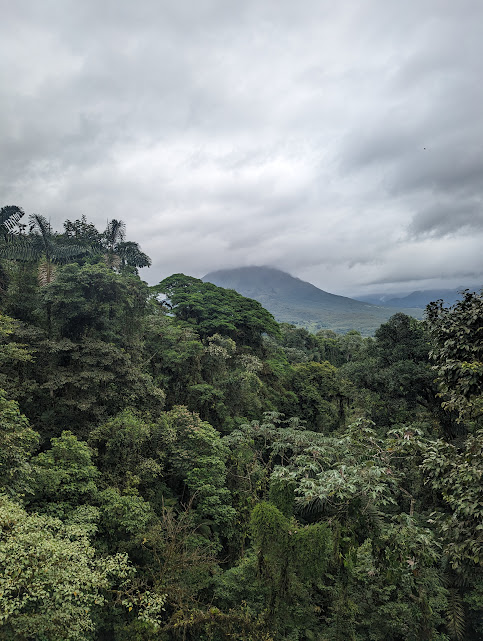 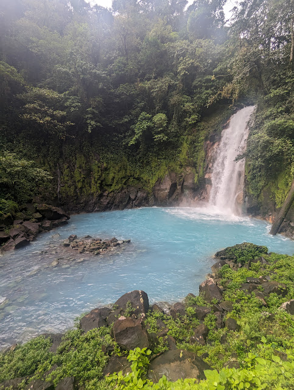 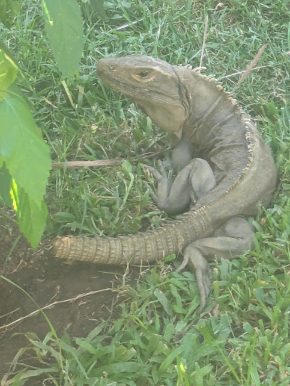 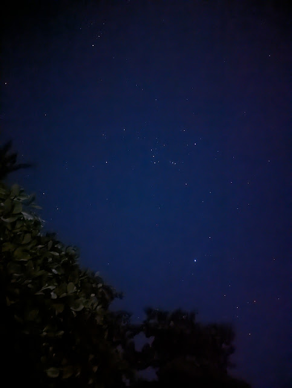 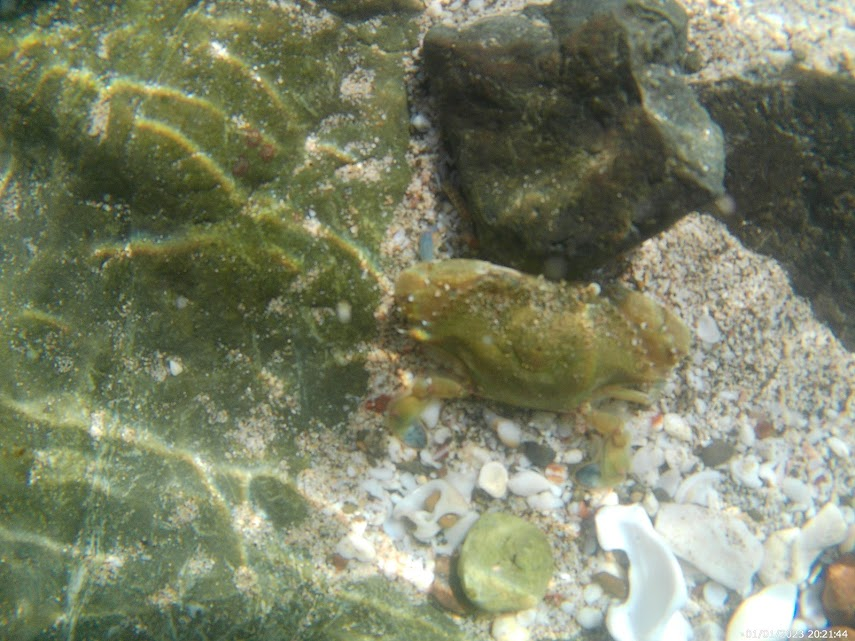Monte Verde
So far all of the places I went to in Costa Rica were hot and humid, like you'd expect from a rainforest. Monte Verde however, was completely different. While it was just as wet as the other places, it was cold, which was due to it being up in the clouds. Here, we stayed in a cabin in the woods, which allowed me to see some cool animals such as a hummingbird and a coati, which is a creature that sorta resembles a racoon. We also did a nightwalk here, which not as amazing as the Tortuguero nightwalk was still amazing.
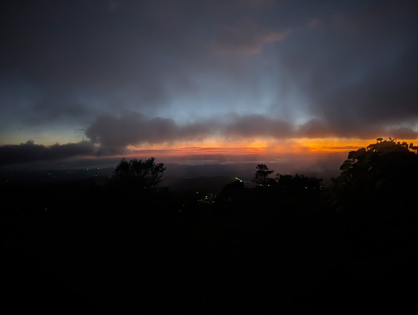 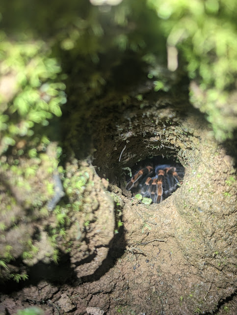Crocodile Bridge and Manuel Antonio National Park
The last two places of notes we went to were Crocodile bridge, which, just as the name suggests, is a bridge where you are able to spot tons of crocodiles from. Manuel Antonio National Park was also amazing, we spotted a bunch of sloths, monkeys, and some very unique birds. The animals below are: American Crocodiles, Central American White-faced Capuchin, Terciopelo, Common Potoo, and the Brown-throated Three-toed Sloth
The Pets(Sorta)
As a kid, I've had some pets, mainly fish, but I did also have two African Dwarf Frogs, respectfully named Lightning and Thunder. Now that was about 10 years ago, now I have over 10, beautiful koi fish. Other than that, we dont keep any animals but we do have some animals that I consider to kinda be pets. Firstly, we have 3 squrriels that come to our backyard who we feed. They first started coming 2 years ago and have been coming ever since. Recently, other than just the squrriels, a cat has begun visiting our backyard frequently. We, as anyone would, gave the cat food and now it spends hours in the backyard, sleeping and chasing the birds.
Holding Critters
For some reason animals look pretty funny while holding them. So, here's various critters in my gangly ass hands.